Teaching · Tutorial
Run Claude Code safely in a Dev Container (VS Code + Docker).
If you're anything like me, your feed is full of people saying Claude Code can do everything. Maybe it can. But I was reluctant to just run the usual one-line install (like npm install -g @anthropic-ai/claude-code), which puts Claude Code directly on your computer, and hand an AI agent the same access my terminal has — every file, every folder, every login. I wanted Claude on a leash. The answer turned out to be a Dev Container: Claude Code runs inside a Docker container, and it can only see the folders you explicitly hand it. I expected a headache. It took about 20 minutes.
The usual way: how most people install and run Claude Code
Most guides have you install Claude Code straight onto your computer with one of these commands from the official setup page:
- macOS, Linux, WSL:
curl -fsSL https://claude.ai/install.sh | bash - Windows PowerShell:
irm https://claude.ai/install.ps1 | iex - Homebrew:
brew install --cask claude-code - WinGet:
winget install Anthropic.ClaudeCode - npm:
npm install -g @anthropic-ai/claude-code(-gmeans “global”: installed for your whole computer, not one project)
Others skip the terminal and use an app instead:
- Claude Desktop: downloaded and installed like any other program, then pointed at a folder on your computer.
- VS Code extension: the Claude Code extension from the Extensions Marketplace, installed into your regular VS Code window.
Then they open a terminal, often in their home folder, and type claude, or start a session in the app. The installers themselves are official and fine. The catch is what comes after: Claude runs as you, so it can read any file your account can, including SSH keys, cloud credentials, browser data and other projects. Claude Code asks before it edits files or runs commands, but people tend to click “yes, don’t ask again” or start it with --dangerously-skip-permissions to stop the prompts. After that, a mistake or a prompt injection hidden in a file or web page can reach everything on your machine.
The app and extension are no different: they run on your computer with the same access. The Dev Container doesn’t replace those permission prompts. It limits the damage if one goes wrong: Claude only sees the folders you mount, and the firewall blocks most of the internet. (You still get the VS Code extension in this setup: the Dev Container installs it inside the container for you, so it only sees what the container sees.)
What you'll end up with. VS Code on your computer, connected to a Linux container that has Claude Code pre-installed and a network firewall that only allows the sites it needs. Your project folder is shared into the container; the rest of your drive is not. This guide is written for Windows (WSL 2 + Docker Desktop), but steps 3–8 are the same on macOS and Linux.
Official references used in this tutorial
- Docker Desktop — free for personal use
- Claude Code Dev Container docs (Anthropic)
- anthropics/claude-code — the repo with the ready-made
.devcontainer - VS Code Dev Containers guide
Steps 1–2
Install WSL 2 and Docker Desktop.
Step 1 · WSL 2. Docker Desktop on Windows runs Linux containers through the Windows Subsystem for Linux. Open PowerShell and install it (or check that you already have version 2):
wsl --install # first-time install (restart when prompted)
wsl --version # confirm WSL version 2.xStep 2 · Docker Desktop. Install Docker Desktop, open it, and wait for Engine running in the bottom-left corner. Then test it:
docker run hello-world
You should see "Hello from Docker! This message shows that your installation appears to be working correctly." and a new hello-world container listed under Containers in the Docker dashboard. (Want to poke around a full Linux container? Try docker run -it ubuntu bash, and exit to leave.)
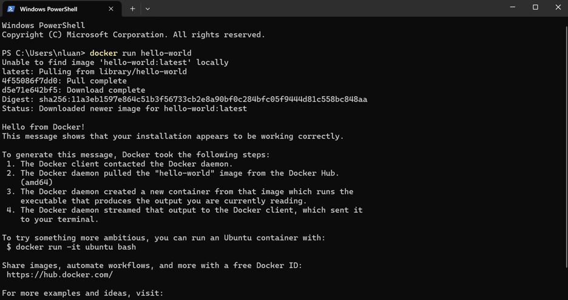
docker run hello-world pulls a tiny test image and prints a success message.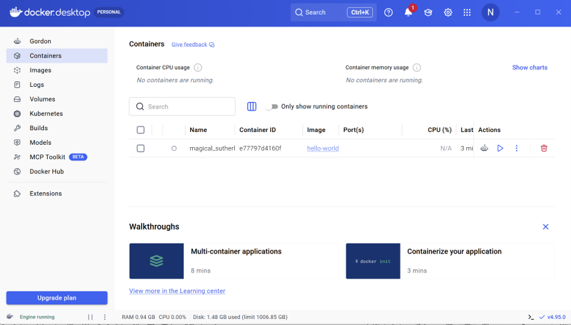
Check: WSL integration is on
In Docker Desktop, go to Settings → Resources → WSL integration. Make sure Enable integration with my default WSL distro is checked (and toggle on Ubuntu if it's listed), then click Apply & restart.
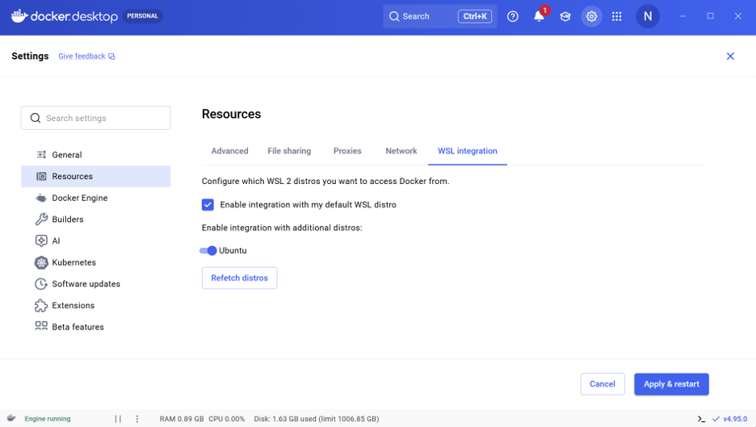
Steps 3–5
Open Anthropic's Dev Container in VS Code.
Step 3 · Install the extension. In VS Code, open Extensions (Ctrl+Shift+X), search Dev Containers, and install the one published by Microsoft.
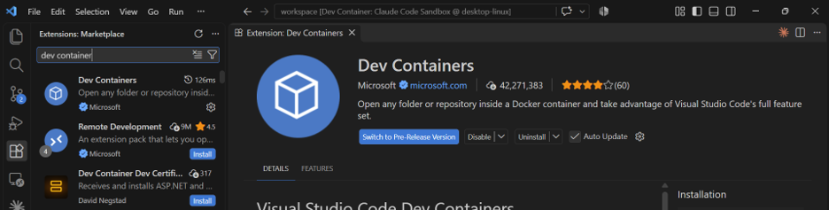
Step 4 · Clone the repo. Anthropic's claude-code repository ships a ready-made .devcontainer folder — a Dockerfile with Claude Code installed, plus a firewall script. Press Win+R, type wt to open Windows Terminal, and run:
git clone https://github.com/anthropics/claude-code.git
cd claude-code
code .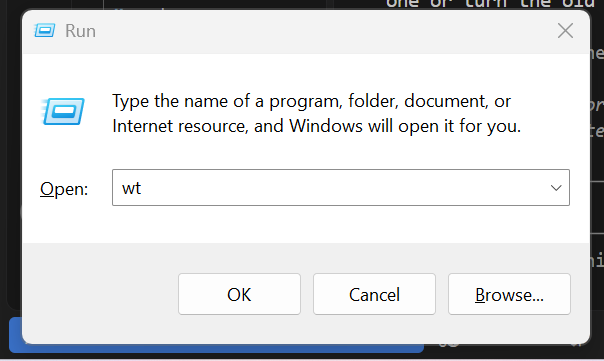
Win+R → wt opens Windows Terminal.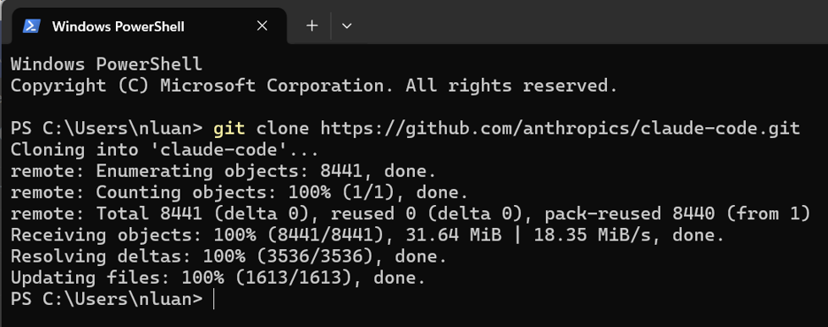
claude-code repo.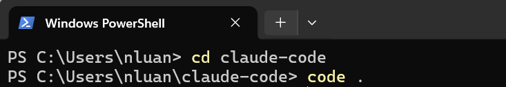
code . opens the folder in VS Code.
Step 5 · Reopen in Container. VS Code notices the .devcontainer folder and shows a pop-up: "Folder contains a Dev Container configuration file." Click Reopen in Container. The first build downloads and builds the image, so give it a few minutes.
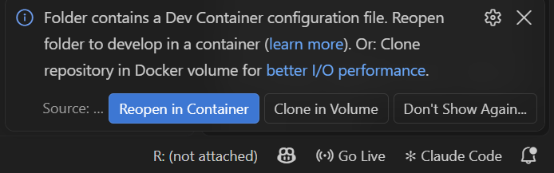
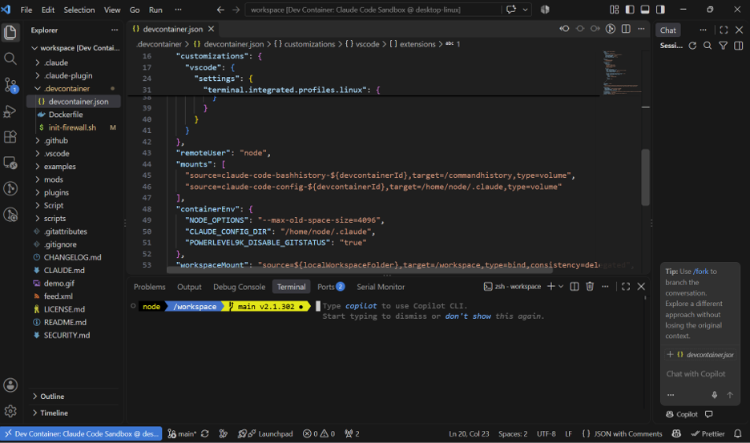
node in /workspace, not your Windows user folder.Ctrl+`) and run pwd. You're in /workspace as user node, not your Windows home folder.vsc-claude-code… image appears under Containers.claude-code repo. Nothing else from your computer is visible.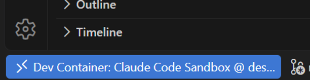
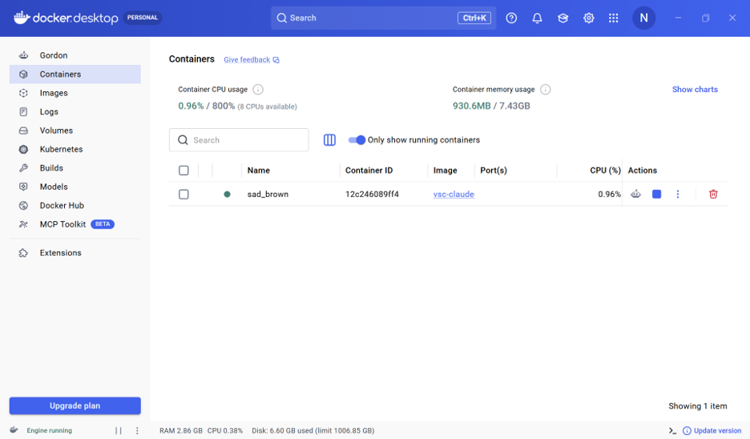
Step 6
Launch Claude and log in.
Claude Code is already installed in the container. In the VS Code terminal, just type:
claude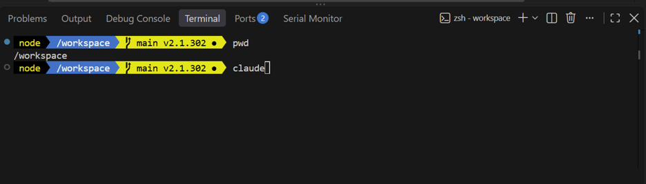
claude.First-run prompts (click to collapse)
- Theme. Pick light or dark mode.
- Login method. Use the arrow keys to choose. I picked Claude account with subscription (Pro, Max, Team, or Enterprise); Anthropic Console bills by API usage instead. Press Enter, sign in on the web page that opens, and come back to VS Code — the terminal shows "Login successful. Press Enter to continue…"
- Security notes. Claude warns that it can make mistakes and that prompt injection is a risk. That's exactly why we're in a container.
- Terminal setup. Choose Yes, use recommended settings (enables
Shift+Enterfor new lines). - Trust this folder. Confirm you trust the files in
/workspace.
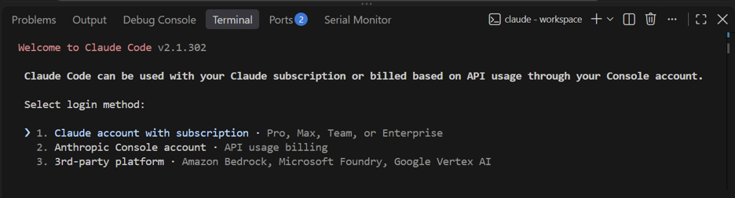
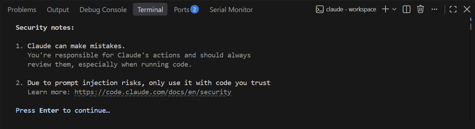
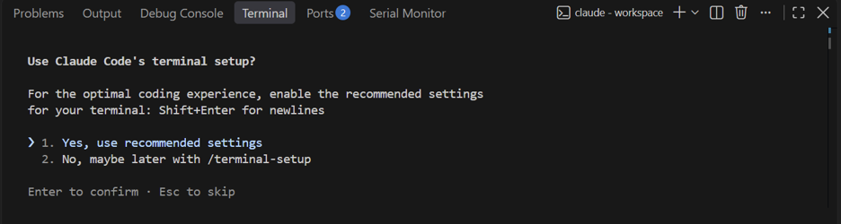
Your login is saved in a Docker volume mounted at /home/node/.claude, so it survives container rebuilds.
Step 7
Mount the project you actually want to work on.
Right now Claude can only see the claude-code repo. To work on your own projects, share them into the container with a bind mount. Open .devcontainer/devcontainer.json and add one line per folder to the "mounts" array:
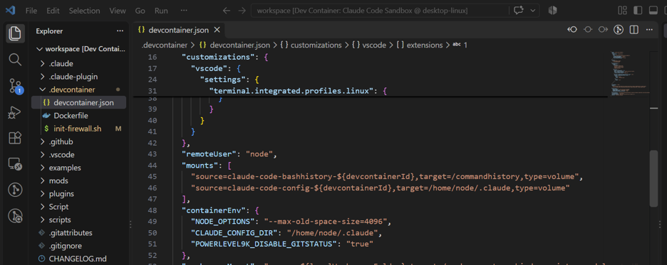
mounts array has two volumes: shell history and Claude’s config.
Here is my setup as an example. I mount natchayal.github.io, the repo I use to build this personal website, and the screenshots in the rest of this tutorial show that repo. Replace it with whichever repo you want to work on.
"mounts": [
"source=claude-code-bashhistory-${devcontainerId},target=/commandhistory,type=volume",
"source=claude-code-config-${devcontainerId},target=/home/node/.claude,type=volume",
"source=C:/Users/nluan/OneDrive/Documents/GitHub/natchayal.github.io,target=/workspace/natchayal.github.io,type=bind"
],
In the last line, change source= to the full path of your repo on your computer, and change the end of target= from natchayal.github.io to your repo’s folder name. Keep the two volume lines as they are.
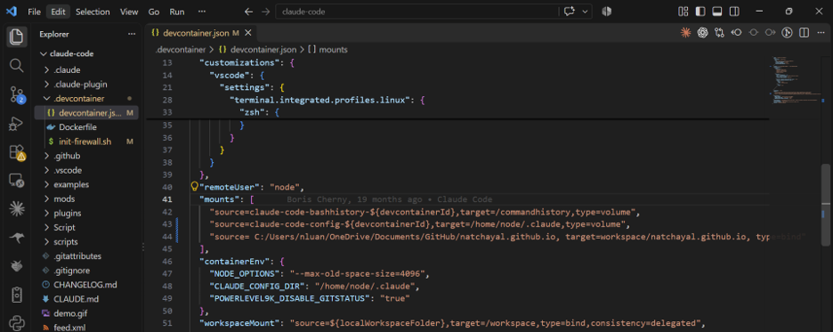
source= and the commas, and a target with no leading slash. The code block above is the corrected version.= signs — source= C:/… will fail to mount.C:/Users/…, not C:\Users\….target=/workspace/…, not target=workspace/….volume lines.
Save the file. VS Code shows "Configuration file(s) changed … The container might need to be rebuilt" — click Rebuild. If the pop-up doesn't appear, press Ctrl+Shift+P (Cmd+Shift+P on Mac), run Dev Containers: Rebuild Container, and press Enter.
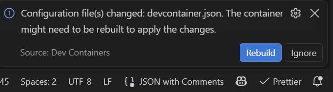
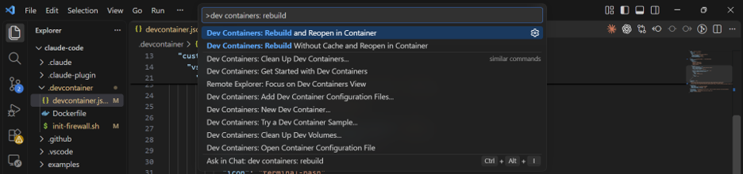
After the rebuild, your project shows up in the Explorer under /workspace/your-repo-name (in my example, /workspace/natchayal.github.io), and you can cd into it from the terminal.
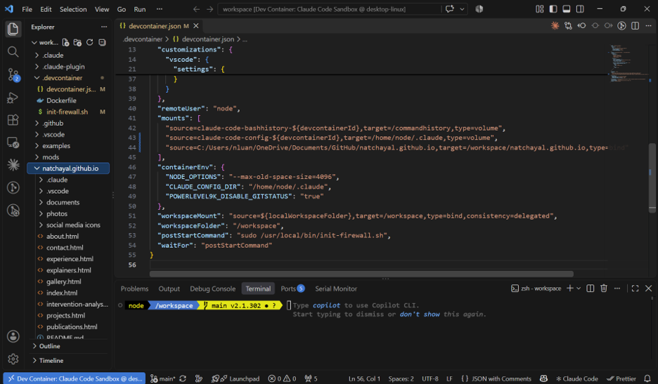
natchayal.github.io, appears in the Explorer alongside claude-code.Troubleshooting: the container fails to start after a rebuild
The container runs .devcontainer/init-firewall.sh on every start. If that script stops with an ipset error saying an element is already added (two allowed domains resolved to the same IP address), change both ipset add allowed-domains … lines in the script to ipset add -exist allowed-domains … and rebuild. -exist tells ipset to skip entries it already has instead of failing.
Step 8
Put Claude to work on your repo.
Move into the mounted project and start Claude there, so it treats that folder as its workspace:
cd natchayal.github.io
claudeConfirm the trust prompt for the new folder, then ask for something. My first test was:
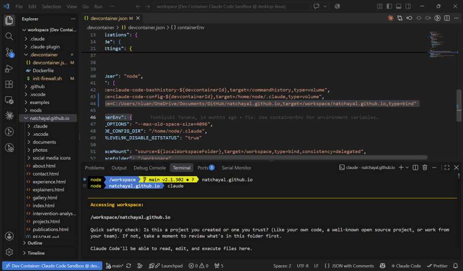
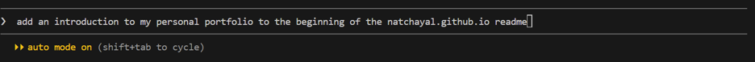
Claude read my About and home pages, wrote an intro, and edited README.md. Because the folder is a bind mount, the change lands in the real file on my computer. I reviewed the diff in GitHub Desktop and committed it; if I hadn't liked it, discarding the change would have put the file back.
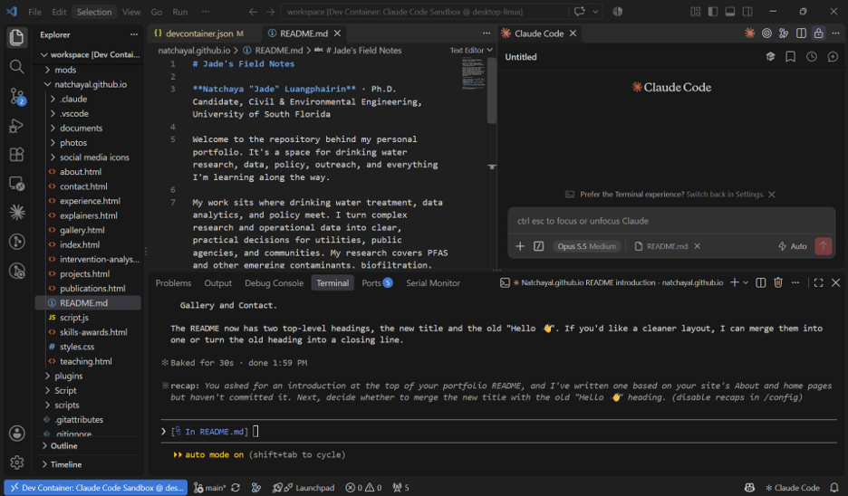
README.md, its summary in the terminal, and the chat panel on the right.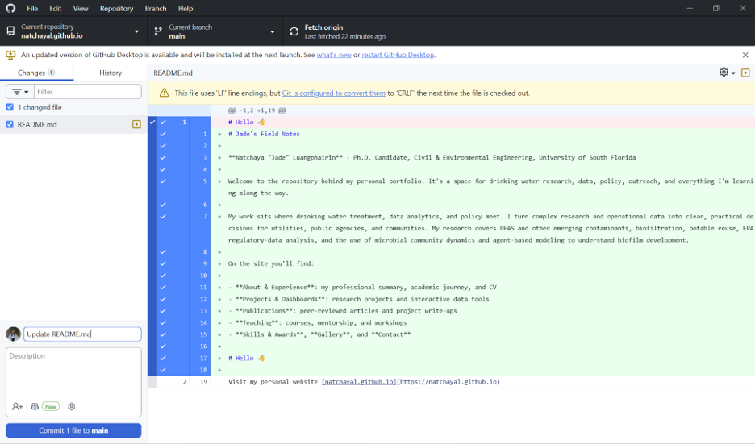
Tip: press Shift+Tab to cycle permission modes (the status line shows, for example, auto mode on). And if you prefer a chat panel to the terminal, the Claude Code extension for VS Code comes pre-installed in the container.
Optional
Already installed Claude Code on your computer? Remove it.
A sandbox doesn't help much if a second copy of Claude Code is still logged in on your host machine. To switch over completely, run these in a normal (non-container) terminal, using only the lines that match how you originally installed it:
1 · Uninstall the VS Code extension
In a VS Code window that is not connected to the container, open Extensions (Ctrl+Shift+X), search Claude Code, and click Uninstall. The copy inside the container is separate and stays.
2 · Uninstall the CLI
If you installed with npm:
npm uninstall -g @anthropic-ai/claude-codeIf you used the native installer, delete the claude binary from ~/.local/bin (Windows: %USERPROFILE%\.local\bin\claude.exe) and its data in ~/.local/share/claude. The setup docs list the current uninstall steps for each method.
3 · Remove settings and saved credentials
Delete the config folder and file, which also hold your login token on Windows and Linux:
Remove-Item -Recurse -Force "$env:USERPROFILE\.claude"
Remove-Item -Force "$env:USERPROFILE\.claude.json"rm -rf ~/.claude ~/.claude.jsonOn macOS the login token lives in Keychain instead: open Keychain Access, search Claude Code, and delete the entry. These folders also hold your Claude Code settings and history, so copy anything you want to keep first.
4 · From now on, only run Claude inside the container
Open your projects through the Dev Container (steps 5–8) and log in there. That copy only ever sees what you've mounted.
Before you let it run free
What the container protects, and what it doesn't.
Instead of having access to every folder on my computer, Claude now has access only to the folders I mount. That's a big improvement, but it isn't magic. Know where the edges are:
init-firewall.sh blocks outbound traffic except an allow list (GitHub, npm, the Anthropic API, the VS Code marketplace). Need another site? Add it to the domain list in the script and rebuild.Within those limits, the same approach works for other coding agents too, like Codex CLI or Copilot CLI: give each one a container, mount only what it needs, and review its changes before you commit. If you have questions, feel free to reach out. Happy (safe) Clauding!
Browse all explainers →Quick Access